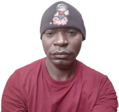

Kevin Cross Minchakpu | WDD 130

Hello, I am Kevin Cross Minchakpu a motivated and curious individual with a strong interest in learning and personal growth. I am passionate about developing my skills, particularly in areas like technology and programming, and is committed to improving myself through education and practical experience. I approach challenges with a positive mindset and a willingness to learn, I adapt to different situations. Beyond academics, I have a variety of interests that reflect my well-rounded personality. I enjoy exploring new ideas, engaging with others, and finding creative ways to solve problems. With a clear sense of purpose and determination, I continue to work toward my goals while building meaningful connections and expanding my knowledge.